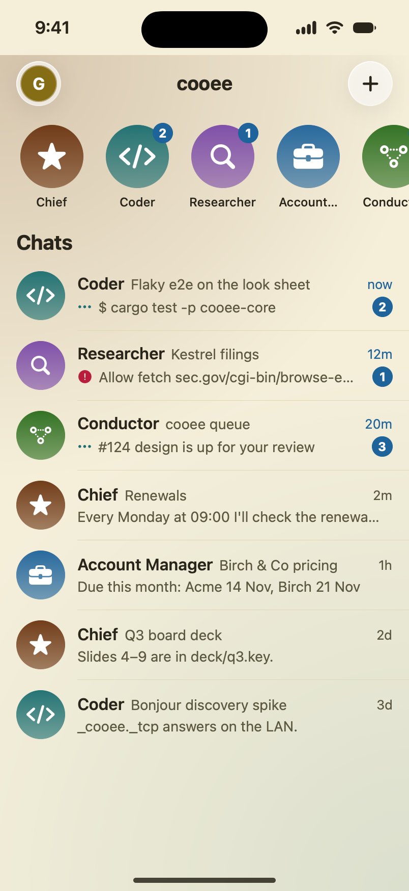

Sessions, drawn from /screens/sessions
Today's home chats, built as #714's sessions screen (fixtures/sessions.json): one section per persona in its order, a row per open chat, a New chat row last. cooee keeps its bar (the owner's avatar opens the menu); everything under it is BlocksView.
Today · native home, iPhone

After · BlocksView, iPhone
Today · native sidebar, Mac

After · BlocksView, Mac (the detail is the chat screen, see Chat)